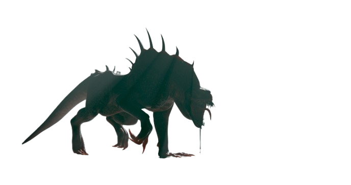

SCP-106
Point de vue du SCP :
Vos cible principale sont les hommes, si le choix s’offre à vous, sinon tuer le premier qui se présente devant vous.
Vous avez le noclip, pour pouvoir traverser les murs ou sol (la traversée des surfaces doit rester assez lente). Servez-vous en pour vous “téléporter†où vous voulez sur la map sauf extérieur ou contourner vos victimes et autre.
Vous n’avez pas l’autorisation d’ouvrir ou fermer les portes.
Si le fémur breaker est enclenché vous devez retourner à votre confinement. Vous avez le droit de repartir si le confinement n’est pas posé sur le sol ou s’il n’y a personne dans votre cellule pour le fémur breaker.
Vous êtes intelligent, vous avez le droit de tendre des embuscades sauf à votre confinement ou si vous restez immobile plus de 2 minutes. Vous avez le droit d’abandonner la poursuite si vous savez que vous ne pouvez pas l'attraper.
Point de vue des joueurs :
Si SCP-106 est collé à vous, vous ne pouvez pas courir.
Si vous arrivez à sortir de la dimension vous devez appliquer un pain RP car vous êtes lourdement blessé.
SCP-682
Point de vue du SCP :
Vous vous attaquez à tous les humains qui passent devant vous.
Vous pouvez ouvrir toutes les portes même accréditées.
Vous êtes intelligent si vous vous sentez en danger vous pouvez fuir ou essayer de tendre des pièges.
Quand vous êtes en état passif vous ne bougez plus mais vous avez le droit de faire des /roll avec les membres du personnel qui tente de vous porter ou autre.
Quand vous êtes dans votre acide vous n’avez pas le droit de rugir ou d'attaquer.
Point de vue des joueurs :
(Non spécifié dans la source)
SCP-939

Point de vue du SCP :
Vous ciblez tout ce qui fait du bruit (tout ce qui apparaît sur votre écran).
Ignorez l’ouverture de la porte de votre confinement quand elle s’ouvre pour un début d'expérience, à la fin vous pouvez essayer de vous échapper calmement en même temps que le personnel sort. (Ne forcez pas la brèche)
Vous devez suivre tous les bruits que vous entendez même si vous savez que ça a pour but de vous confiner, les narrations autour de vous comptent.
Vous vous attaquez même aux autres SCP.
Vous ne reniflez pas, 939 ne peut pas le faire alors épargnez-nous en.
Vous avez le droit de répéter les voix que vous avez entendues autour de vous, en particulier celles des gens que vous avez tués.
Si vous entendez des gens arriver vers vous, vous pouvez leur tendre une embuscade.
Point de vue des joueurs :
Si vous êtes exposé à 939, qu’il est dans la même pièce que vous ou vous a mordue, vous subissez une amnésie de classe-C dans les 5 minutes qui suivent et vous tombez dans les pommes sur le moment.
SCP-096
Point de vue du SCP :
Vous ne vous attaquez seulement à ceux qui vous ont regardé ou qui vous bloquent le chemin lors de votre rage.
Vous n’êtes pas intelligent, vous avancez sans but et vous ne forcez pas le regard.
Vous devez détruire les portes fermées sur le chemin entre vous et votre cible uniquement, tout abus sera sanctionné.
Vous avez le droit d’ouvrir les portes quand vous n’êtes pas en rage.
Vous ne pouvez pas ramasser d’objet et de cartes.
Quand on vous prend la main vous suivez la personne qui vous la prend, vous pouvez partir uniquement si le joueur s’éloigne trop, si une tesla activée vous sépare ou une porte ou encore si le joueur fait une action qui nécessite ces 2 mains.
Si on vous met un sac sur la tête vous ne poursuivrez plus les gens qui vous regardent par la suite.
Point de vue des joueurs :
Si vous avez regardé 096 vous êtes autorisé à tenter de le fuir ou juste vous suicider, mais il vous est interdit quand vous êtes dans la même pièce que lui de dodger 096.
SCP-035
Point de vue du SCP :
Vous êtes bien évidemment intelligent. Vous avez de nombreuses connaissances sur la Fondation-SCP dont les autres SCP et comment y survivre.
Vous pouvez contrôler grâce à votre clic gauche, à partir du moment où ils sont immobilisés donner leur des ordres avec votre voix.
Vous vous attaquez aux gens de votre choix.
Votre but principal est de trouver un moyen de vous enfuir.
Restez coopératif durant les expériences sauf si vous pensez que celle-ci mette votre intégrité en danger.
Point de vue des joueurs :
Si votre regard est attiré vers le masque vous ne bougez plus et attendez que votre personnage le récupère tout seul (sauf UIA ou si vous portez l’objet à distance avec une perche).
Si 035 vous parle vous devez l'écouter, suivant les rôles vous pouvez plus ou moins résister mais pas plus de 15 secondes.
Une fois sous le contrôle de 035 vous écoutez tous ces ordres même les plus fous (sauf ce qui sort du règlement RP basique).
Vous n’avez pas le droit de vous retourner contre 035 une fois sous son contrôle même après qu’il soit mort vous continuez de suivre ces ordres.
Tous les membres du personnel ayant été sous le contrôle de 035 doivent être abattus.
SCP-066
Point de vue du SCP :
Vous êtes sourd aux ordres.
Point de vue des joueurs :
Si vous vous trouvez dans la même pièce que SCP-066 vous subissez un effet sonore stressant pendant tout le temps où vous êtes présent.
SCP-966
Point de vue du SCP :
Vous êtes invisible sauf si vous êtes très proche d’une lumière, ne vous montrez pas, chassez la nuit.
Vous ne devez pas attaquer un joueur si celui-ci ne fait pas de bruit, vous devez le traquer silencieusement.
Vous ne pouvez pas ouvrir ou fermer les portes.
Point de vue des joueurs :
Si SCP-966 est près de vous vous avez des hallucinations auditives et visuelles (brouillard, sons étranges).
SCP-049
Point de vue du SCP :
Vous devez guérir tous les humains que vous rencontrez en utilisant votre touche spéciale.
Vous pouvez attaquer ceux qui vous résistent ou qui tentent de fuir.
Vous êtes intelligent et persuasif, utilisez ça pour capturer vos victimes.
Vous ne pouvez pas ouvrir ou fermer les portes.
Point de vue des joueurs :
Si SCP-049 vous touche avec sa touche spéciale, vous devenez un zombie contrôlé par SCP-049 (SCP-049-2).
Vous devez suivre les ordres de SCP-049-2.
SCP-049-2
Point de vue du SCP :
Vous êtes sous le contrôle de SCP-049.
Vous attaquez tout ce qui n’est pas SCP-049 et les humains.
Vous ne pouvez pas ouvrir ou fermer les portes.
Point de vue des joueurs :
Vous devez obéir aux ordres donnés par SCP-049.
Vous ne pouvez pas parler sauf si SCP-049 l’autorise.
SCP-999
Point de vue du SCP :
Vous êtes pacifique et joyeux.
Vous pouvez guérir et calmer les joueurs avec votre contact.
Vous ne devez pas attaquer ou blesser qui que ce soit.
Point de vue des joueurs :
Vous pouvez vous approcher de SCP-999 pour recevoir des bonus de santé et de moral.
SCP-173
Point de vue du SCP :
Vous ne bougez que quand personne ne vous regarde.
Vous attaquez en brisant le cou de vos victimes.
Vous pouvez vous déplacer rapidement entre les points de vue fermés.
Vous ne pouvez pas ouvrir ou fermer les portes.
Point de vue des joueurs :
Si vous regardez SCP-173, il ne peut pas bouger.
Clignez des yeux avec prudence.
SCP-1123
Point de vue du SCP :
Vous êtes passif et ne devez pas attaquer sauf si on vous dérange directement.
Vous pouvez manipuler des objets à distance.
Point de vue des joueurs :
Évitez de provoquer SCP-1123 pour ne pas déclencher une réaction agressive.